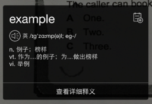
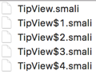

Android逆向实践: 使用Smali注入改造YD词典悬浮窗
来源:简书
前言
最近有个开源APP咕咚翻译. 参考我之前在Android无需权限显示悬浮窗, 兼谈逆向分析app中介绍的一个小的细节, 以悬浮窗的形式做了复制查词功能. 在我写那篇文章之后, 就一直想有这样一个能提供复制查词功能的APP, 无奈自己不知道怎么做一个词典APP, 也就一直没管(主要是懒). 自己平时一直用YD词典, 它也有复制查词功能, 但是YD悬浮窗的交互我觉得特别蛋疼, 每次安装还要把悬浮窗权限手动打开才能用.

几天前下载咕咚翻译试用, 发现了一个崩溃, 顺手改了一下发了pull request. 然后就在想怎么给咕咚翻译的悬浮窗加上交互, 至少能让我主动关闭悬浮窗, 参考了iOS上通知的交互方式, 也就是能往下拉一点点, 还能往上滑动关闭, 无奈好像遇到了Android的bug, 就用了一种奇怪的方式实现, 有一定副作用, 于是没有push到github, 就自己本地用了. 下面故意展示了副作用.

寝室每天都要断电, 断电了就没网, 咕咚翻译必须联网查词, 一到晚上断电就没法用. 而YD词典拥有离线复制查词功能, 悬浮窗有点蛋疼, 凑合凑合也能用.
需求
我的需求是: 咕咚翻译能提供离线查词的功能.
这事说起来简单, 实际上很复杂, 例如离线词典数据从哪来? 查词速度如何? 怎么管理离线词典数据? 如何实现功能? 没有找过开源项目, 一直用YD词典的复制查词功能, 于是我就盯上了YD词典.
不知道怎么实现离线查词, 必然需要研究YD词典的实现, 在手机上粗略看了一下YD词典在/data/data下的目录结构, 大概能确定YD词典的离线查词功能实现在native层, 这要我研究到狗年马月.
今天突然来了个奇思妙想, 既然YD词典过于庞大, 无法剥离离线查词功能, 何不将咕咚翻译的悬浮窗"赠与"YD词典, 来个移花接木. 之前从来没有做过这方面的尝试, 但是凭着自己以往的经验, 觉得难度不算大, 可以在几个小时之内搞定.
可行性
想把咕咚翻译的悬浮窗"赠与"YD词典, 我只想到了一种方案: Smali注入.
我是个懒人, 一个事情太麻烦我就不想做了, Smali注入这个方案看起来很吓人, 实际想想可行性非常高.
观察一下Smali文件的结构:
# class信息
# 注解信息
# 实现的接口
# static字段
# 成员字段
# 直接成员方法
# 重写成员方法
Smali文件中对外部类的引用使用类似完全限定名的形式.
可以猜测: 如果一个类只依赖Android framework, 不依赖其他自定义类, 那么直接把这个类的Smali文件放到apktool反编译生成的目录中, 不会产生错误.
同时, 假设一个类依赖其他自定义类, 如果把整个依赖关系中涉及的所有非Framework的Smali文件都放入apktool生成的目录中, 同样不会产生错误.
基于以上猜测, 我们可以做到将一个APP中的类安全的添加到另一个APP中.
剩下的就是对被注入APP的Smali代码进行修改, 使得被注入APP调用注入的Smali代码, 且能将信息传递给注入的Smali代码.
观察实现
知道了思路, 就可以实际操作了. 操作前需要了解两个APP的逻辑, 这样才能选择合适的地方进行Smali注入, 减少工作量, 同时减少出错的可能.
咕咚翻译的实现
对咕咚翻译, 我们可以同时观察它的Java代码和Smali代码.
本文粘贴的咕咚翻译代码是我修改的版本, 与github上的源码有区别.
咕咚翻译中悬浮窗使用MVP的设计, 当View被创建时会使用Dagger 2创建Presenter, 同时进行双方的依赖注入.
View的实现类TipView关键代码如下所示:
public class TipView extends FrameLayout implements ITipView {
@Inject
protected ITipPresenter mPresenter;
public TipView(Context context) {
this(context,null);
}
public TipView(Context context, AttributeSet attrs) {
this(context, attrs,0);
}
public TipView(Context context, AttributeSet attrs, int defStyleAttr) {
......
DaggerTipComponent.builder().tipModule(new TipModule(this)).build().inject(this);
}
}
Presenter的接口如下所示:
public interface ITipPresenter {
void readyForShow();
void tipShowFully();
void tipHided();
void favoriteClicked(Result result);
void onUserTouch();
void onTouchOver();
}
当TipView中的收藏按钮被点击时, favoriteClicked方法会被调用. ITipPresenter的实现类是TipPresenterImpl
我们需要将TipView的相关类全部注入到YD词典中, 根据前面的分析, 我们的依赖应当越少越好, 否则一旦类的关系没设计好, 一个类可能带起一堆类, 特别麻烦, 所以我把Dagger 2相关的依赖注入改成自己直接手写, 同时把收藏按钮去掉, 因为这会导致TipPresenterImpl中依赖咕咚翻译Model层, 这会带起一堆依赖, 为了简单直接去掉. 悬浮窗的代码中还使用RxJava相关的东西, 同样需要把悬浮窗中涉及RxJava的部分去掉.
这一步做完, 我们需要直接注入的类就已经变得很清爽了.
此外, 我们还需要知道如何调用TipView, 咕咚翻译里相关代码如下所示:
public void show(Result result) {
TipView tipView = new TipView(mContext);
tipView.setContent(result);
tipView.setViewManager(mWindowManager);
LayoutParams params = getPopViewParams();
tipView.saveLayoutParams(params);
mWindowManager.addView(tipView, params);
}
在这里我们知道如果要调用TipView, 我们需要创建它, 同时获取一个LayoutParams, 一个Result, 再通过WindowManager完成全部调用.
这是我们需要在YD词典中添加的smali代码的逻辑, 通过这段代码来调用我们注入的TipView.
再观察上面方法中出现的Result是什么:
public class Result {
......
public Result(IResult mIResult) {
......
}
......
}
这个类可以通过传入一个IResult完成构造, IResult是个接口, 这其实对我们很有利. 假如YD词典离线查词的结果实现了IResult, 我们就能直接构造一个Result传给TipView了. 因此我们的目的之一就是将YD词典离线查词的结果改造成实现IResult接口. 为此, 我们可以精简IResult, 只保留我们需要的方法, 精简结果如下:
public interface IResult {
List<String> wrapExplains();
String wrapQuery();
int wrapErrorCode();
String wrapPhAm();
}
由于我希望精简之后, 咕咚翻译还能正常编译运行, 所以保留了一个多余的wrapErrorCode方法, 这个方法在Smali注入中没用.
总结一下, 在Smali层面上, 我们需要将TipView的所有代码注入YD词典中, 需要在YD词典中合适的地方编写调用TipView的逻辑, 需要让YD词典离线查词结果实现IResult接口.
YD词典的实现
对YD词典, 我们可以观察的Smali代码, 也可以观察比较接近YD词典源码的Java代码.
关于复制查词的实现, 一个常识是开发者需要在Service中监听剪贴板信息变化, 在手机里观察YD词典的信息, 可以大概猜是哪个Service在监听剪贴板.
根据名字, 可以猜到在ClipboardWatcher中, 建议先用jadx或者dex2jar观察, 毕竟直接看Smali还是太不直观了, 不到必要的时候不用看Smali.
首先看到了如下代码:
private class ClipboardListener implements OnPrimaryClipChangedListener {
......
public void onPrimaryClipChanged() {
......
if (ClipboardWatcher.isValidText(clipboardText)) {
......
ClipboardWatcher.this.queryWordViaService(clipboardText);
}
}
}
比较惊喜的是代码竟然没有混淆, 这下可以节省不少时间, 不用去猜变量的意思了. 接着看ClipboardWatcher.queryWordViaService:
private void queryWordViaService(String word) {
if (...) {
QuickQueryService.show(this, word, 0,
Util.dip2px(this, BitmapDescriptorFactory.HUE_ORANGE),
QuickQueryType.COPY_REQ_POPUP);
}
}
非常简单, 还是方法调用, 我们接着看QuickQueryService.show:
public static void show(Context context, String word,
int screenX, int screenY, QuickQueryType quickQueryType) {
show(context, word, screenX, screenY, true, true, quickQueryType);
}
private static void show(Context context, String word, int screenX, int screenY,
boolean showCloseButton, boolean belowWord,
QuickQueryType quickQueryType) {
Intent intent = new Intent(context, QuickQueryService.class);
......
intent.putExtra(WORD, word);
......
context.startService(intent);
}
整个过程很清晰, ClipboardWatcher负责监听剪贴板, 当剪贴板内容变化后, 获取其内容, 交给QuickQueryService处理. 直接去看QuickQueryService.onStartCommand, 十有八九是在这里进行下一步逻辑:
public int onStartCommand(Intent intent, int flags, int startId) {
......
try {
if (...) {
......
String word = intent.getStringExtra(WORD);
......
this.handler.obtainMessage(0, Util.deleteRedundantSpace(word)).sendToTarget();
} else if (...) {
......
}
} catch (Exception e) {
e.printStackTrace();
}
return 2;
}
这里不用管其他的逻辑, 只看关键代码, QuickQueryService从intent中获取需要查询的单词, 交给handler处理, 再看handler.handleMessage的逻辑:
public void handleMessage(Message msg) {
try {
QuickQueryService.this.mainHandler.obtainMessage(0,
QueryServerManager.getLocalQueryServer().queryWord(msg.obj)).sendToTarget();
} catch (Exception e) {
e.printStackTrace();
}
}
显然, handler应该是一个非主线程的handler, 在这里进行了本地查词相关的工作, 最后把结果交给mainHandler处理, mainHandler.handleMessage逻辑如下:
public void handleMessage(Message msg) {
try {
QuickQueryService.this.view.setContent(msg.obj);
} catch (Exception e) {
e.printStackTrace();
}
}
可以猜到view就是YD词典的悬浮窗类, 服务只需要调用它的setContent方法, 剩下的由view自行处理, 这里是复制查词功能整个调用的终点. 如果我们要进行Smali注入, 这个方法是非常不错的注入点. 最后一个问题: 上面的msg.obj是什么?
我们知道这个对象是通过调用QueryServerManager.getLocalQueryServer().queryWord得到的, 查看这个类的代码可以很容易知道msg.obj的类型是YDLocalDictEntity, 根据之前的讨论, 我们需要让它实现IResult, 因此我们还要对这个类进行Smali注入.
总结一下, 我们需要对mainHandler.handleMessage注入代码, 让它调用我们的TipView, 需要对YDLocalDictEntity注入代码, 让它实现IResult接口. 此外, 由于调用TipView还需要WindowManager支持, 因此我们可能还需要对QuickQueryService进行注入.
实施注入
先用apktool反编译YD词典APK. 下面开始进行Smali注入.
直接复制Smali
对于完整的类, 我们不需要手写Smali代码, 直接编译一个咕咚翻译APK, 再用apktool反编译, 到对应的路径下把相应的smali文件复制到YD词典目录下.
注意复制smali文件的时候务必要复制全部, 一个java文件可能生成不止一个smali文件, 例如下面是TipView对应的全部smali文件.

所有引用到的类的smali都要复制进去, 且按照原APK的包名设置目录并对应放置.
这一步很简单, 仅仅是复制一下就完成了.
修改Smali
完成了复制, 还需要添加调用代码, 注入代码必须要看smali了.
首先对mainHandler.handleMessage进行注入.
这里有同学可能会去QuickQueryService.smali里面找代码, 实际上这部分代码不在这个文件里, 而是在QuickQueryService$2.smali中, 这主要是因为mainHandler是一个内部类实例, 内部类实例都是在class$n.smali这种命名的文件里. 要知道具体是哪个文件, 可以看jadx中的初始化代码, 代码上都会有注释写清楚真正的代码在哪个文件里, 也可以在QuickQueryService.smali中直接找到答案, 例如QuickQueryService.onCreate方法中有如下一段:
.method public onCreate()V
......
new-instance v1, Lcom/youdao/dict/services/QuickQueryService$2;
invoke-direct {v1, p0}, Lcom/youdao/dict/services/QuickQueryService$2;-><init>(Lcom/youdao/dict/services/QuickQueryService;)V
iput-object v1, p0, Lcom/youdao/dict/services/QuickQueryService;->mainHandler:Landroid/os/Handler;
......
return-void
.end method
这就是典型的初始化操作, 创建一个实例QuickQueryService$2, 由v1指向它. 随后调用v1的mainHandler的代码在QuickQueryService$2.smali中. 直接到QuickQueryService$2.smali中找handleMessage方法, 代码如下(可以略过这段smali代码):
# virtual methods
.method public handleMessage(Landroid/os/Message;)V
.locals 3
.param p1, "msg" # Landroid/os/Message;
.prologue
.line 85
:try_start_0
iget-object v1, p1, Landroid/os/Message;->obj:Ljava/lang/Object;
check-cast v1, Lcom/youdao/dict/model/YDLocalDictEntity;
.line 86
.local v1, "entity":Lcom/youdao/dict/model/YDLocalDictEntity;
iget-object v2, p0, Lcom/youdao/dict/services/QuickQueryService$2;->this$0:Lcom/youdao/dict/services/QuickQueryService;
# getter for: Lcom/youdao/dict/services/QuickQueryService;->view:Lcom/youdao/dict/widget/QuickQueryView;
invoke-static {v2}, Lcom/youdao/dict/services/QuickQueryService;->access$100(Lcom/youdao/dict/services/QuickQueryService;)Lcom/youdao/dict/widget/QuickQueryView;
move-result-object v2
invoke-virtual {v2, v1}, Lcom/youdao/dict/widget/QuickQueryView;->setContent(Lcom/youdao/dict/model/YDLocalDictEntity;)V
:try_end_0
.catch Ljava/lang/Exception; {:try_start_0 .. :try_end_0} :catch_0
.line 90
.end local v1 # "entity":Lcom/youdao/dict/model/YDLocalDictEntity;
:goto_0
return-void
.line 87
:catch_0
move-exception v0
.line 88
.local v0, "e":Ljava/lang/Exception;
invoke-virtual {v0}, Ljava/lang/Exception;->printStackTrace()V
goto :goto_0
.end method
别看这段代码这么长, 实际上就是下面这段Java代码:
public void handleMessage(Message msg) {
try {
QuickQueryService.this.view.setContent(msg.obj);
} catch (Exception e) {
e.printStackTrace();
}
}
因为内部类访问外部类实例的本质, 是通过编译器给咱们加的各种合成方法(Synthetic Method)实现的, 所以转换成smali之后特别冗长.
我们要做的就是把这段smali代码改成类似下面的Java代码的效果
public void handleMessage(Message msg) {
TipView tipView = new TipView(mContext);
Result result = new Result((YDLocalDictEntity) msg.obj);
tipView.setContent(result);
tipView.setViewManager(QuickQueryService.this.mWindowManager);
LayoutParams params = QuickQueryService.getPopViewParams();
tipView.saveLayoutParams(params);
QuickQueryService.this.mWindowManager.addView(tipView, params);
}
但是这段代码的能跑的前提是YDLocalDictEntity实现了IResult, 以及QuickQueryService有一个成员变量mWindowManager和一个静态方法getPopViewParams.
YDLocalDictEntity注入
打开YDLocalDictEntity.smali, 和写Java一样, 一个类要实现一个接口, 需要写implements interface_name, 同时实现方法, smali也类似, 修改后smali如下所示, 添加的代码我重点标出来了:
.class public Lcom/youdao/dict/model/YDLocalDictEntity;
.super Ljava/lang/Object;
.source "YDLocalDictEntity.java"
# interfaces
.implements Ljava/io/Serializable;
#========在这里添加要实现的接口==================
.implements Lname/gudong/translate/mvp/model/entity/IResult;
#=============================================
......
#======下面是IResult四个方法的实现=============
.method public wrapQuery()Ljava/lang/String;
.locals 1
.prologue
iget-object v0, p0, Lcom/youdao/dict/model/YDLocalDictEntity;->word:Ljava/lang/String;
return-object v0
.end method
.method public wrapExplains()Ljava/util/List;
.locals 1
.annotation system Ldalvik/annotation/Signature;
value = {
"()",
"Ljava/util/List",
"<",
"Ljava/lang/String;",
">;"
}
.end annotation
.prologue
iget-object v0, p0, Lcom/youdao/dict/model/YDLocalDictEntity;->translations:Ljava/util/ArrayList;
return-object v0
.end method
.method public wrapErrorCode()I
.locals 1
.prologue
const v0, 0x0
return v0
.end method
.method public wrapPhAm()Ljava/lang/String;
.locals 1
.prologue
iget-object v0, p0, Lcom/youdao/dict/model/YDLocalDictEntity;->phoneticUS:Ljava/lang/String;
return-object v0
.end method
#=============================================
iget-object v0, p0, field可以理解为v0 = p0.field.
这里wrapQuery, wrapExplains和wrapPhAm三个方法都只是取当前对象中的一个成员返回, wrapErrorCode纯粹是为了兼容才写入接口的, 直接返回0. 这些代码可以从类似的Java代码对应的smali中修改得到, 也可以直接写, 毕竟这些代码很简单.
QuickQueryService注入
我们需要给QuickQueryService添加一个WindowManager成员和一个静态方法, 为了方便代码书写, 全部使用public修饰.
QuickQueryService.smali修改后如下:
......
.field private view:Lcom/youdao/dict/widget/QuickQueryView;
#============添加一个成员 mWindowManager==============
.field public mWindowManager:Landroid/view/WindowManager;
#==================================================
......
.method public onCreate()V
.locals 3
......
#=======初始化 mWindowManager==================
const-string/jumbo v0, "window"
invoke-virtual {p0, v0}, Landroid/content/Context;->getSystemService(Ljava/lang/String;)Ljava/lang/Object;
move-result-object v0
check-cast v0, Landroid/view/WindowManager;
iput-object v0, p0, Lcom/youdao/dict/services/QuickQueryService;->mWindowManager:Landroid/view/WindowManager;
#=======================================
.line 108
return-void
.end method
......
#====添加静态方法 getPopViewParams==========
.method public static getPopViewParams()Landroid/view/WindowManager$LayoutParams;
.locals 8
...(建议用Java写了反编译复制过来)...
.end method
#=====================
添加成员可以说是依葫芦画瓢, 初始化也很容易写, 注意把初始化的代码放到onCreate方法的最下面, 因为这个方法无返回值, 因此在方法末尾可以随意使用寄存器, 不需要操心破坏寄存器里的原始值. 静态方法的声明很容易, 但是这个方法代码量大, 建议用Java写了反编译了复制, 这里就不贴了, 实在太长了, 光看到.locals 8就够吓人了.
mainHandler注入
我们只需要注入mainHandler.handleMessage, 但是因为代码较多, 需要仔细写, 这里我们没有动外层的try-catch, 直接在内层做修改, 注释标明了这块区域:
# virtual methods
.method public handleMessage(Landroid/os/Message;)V
.locals 3
.param p1, "msg" # Landroid/os/Message;
.prologue
.line 85
:try_start_0
iget-object v1, p1, Landroid/os/Message;->obj:Ljava/lang/Object;
check-cast v1, Lcom/youdao/dict/model/YDLocalDictEntity;
.line 86
.local v1, "entity":Lcom/youdao/dict/model/YDLocalDictEntity;
iget-object v2, p0, Lcom/youdao/dict/services/QuickQueryService$2;->this$0:Lcom/youdao/dict/services/QuickQueryService;
#前面的代码使得v1是YDLocalDictEntity, v2是QuickQueryService
#=======下面是注入代码=============
#v0指向一个Result, 使用v1做参数初始化, v1是YDLocalDictEntity
new-instance v0, Lname/gudong/translate/mvp/model/entity/Result;
invoke-direct {v0, v1}, Lname/gudong/translate/mvp/model/entity/Result;-><init>(Lname/gudong/translate/mvp/model/entity/IResult;)V
#将v1改为指向一个TipView, 使用v2做采纳数初始化, v2是QuickQueryService
new-instance v1, Lname/gudong/translate/listener/view/TipView;
invoke-direct {v1, v2}, Lname/gudong/translate/listener/view/TipView;-><init>(Landroid/content/Context;)V
#下面这句等于v1.setContent(v0)
invoke-virtual {v1, v0}, Lname/gudong/translate/listener/view/TipView;->setContent(Lname/gudong/translate/mvp/model/entity/Result;)V
#下面这句将v0指向QuickQueryService.this.mWindowManager
iget-object v0, v2, Lcom/youdao/dict/services/QuickQueryService;->mWindowManager:Landroid/view/WindowManager;
#等于v1.setViewManager(v0)
invoke-virtual {v1, v0}, Lname/gudong/translate/listener/view/TipView;->setViewManager(Landroid/view/ViewManager;)V
invoke-static {}, Lcom/youdao/dict/services/QuickQueryService;->getPopViewParams()Landroid/view/WindowManager$LayoutParams;
#下面这句将上面方法得到的结果存到v0, 也就是说v0此时是LayoutParams
move-result-object v0
#v1.saveLayoutParams(v0)
invoke-virtual {v1, v0}, Lname/gudong/translate/listener/view/TipView;->saveLayoutParams(Landroid/view/WindowManager$LayoutParams;)V
# v2是QuickQueryService, 下面这句等于v2 = v2.mWindowManager, 此时v2是mWindowManager
iget-object v2, v2, Lcom/youdao/dict/services/QuickQueryService;->mWindowManager:Landroid/view/WindowManager;
#等于v2.addView(v1, v0)
invoke-interface {v2, v1, v0}, Landroid/view/WindowManager;->addView(Landroid/view/View;Landroid/view/ViewGroup$LayoutParams;)V
#======上面是注入代码========
:try_end_0
.catch Ljava/lang/Exception; {:try_start_0 .. :try_end_0} :catch_0
.line 90
.end local v1 # "entity":Lcom/youdao/dict/model/YDLocalDictEntity;
:goto_0
return-void
.line 87
:catch_0
move-exception v0
.line 88
.local v0, "e":Ljava/lang/Exception;
invoke-virtual {v0}, Ljava/lang/Exception;->printStackTrace()V
goto :goto_0
.end method
如果不明白注入的代码, 可以看我写的注释, 总体上来看还是很简单的. 当然, 我手写的代码的效率没有生成的高.
添加资源
由于TipView中会使用layout, 所以还需要把layout下的文件放到YD词典目录的对应位置. 而且需要自己在res/values/ids.xml和res/values/public.xml中添加一些内容. 如果layout中引用了drawable, 还需要把对应的drawable放到YD词典目录的对应位置. 引用了color, dimen等的, 都需要添加对应的定义.
apktool在打包的时候会用aapt来帮助生成id, 但是实际上smali文件中已经没有对R文件的引用了, 全是常量, 所以对于代码中直接使用的R.id.name, 需要我们自己到ids.xml中添加id, 然后到public.xml中指定好唯一的值, 再把smali中的常量替换成我们定义的, 对于layout, 只需要到public.xml中指定好值, 把smali中R.layout.name换成我们指定的值就行. 其他的如color, dimen的, aapt会自动帮我们生成id. 但如果直接在代码中使用了, 还是要和layout一样, 自己去定义.
例如我在ids.xml中添加了如下内容:
<item type="id" name="pop_view_content_all">false</item>
<item type="id" name="pop_view_content_without_shadow">false</item>
<item type="id" name="ll_pop_src">false</item>
<item type="id" name="tv_pop_src">false</item>
<item type="id" name="tv_pop_phonetic">false</item>
<item type="id" name="ll_pop_dst">false</item>
<item type="id" name="tv_point">false</item>
在public.xml中添加了如下内容:
<public type="layout" name="pop_view" id="0x7f0301a7" />
<public type="id" name="pop_view_content_all" id="0x7f0d0629" />
<public type="id" name="pop_view_content_without_shadow" id="0x7f0d062a" />
<public type="id" name="ll_pop_src" id="0x7f0d062b" />
<public type="id" name="tv_pop_src" id="0x7f0d062c" />
<public type="id" name="tv_pop_phonetic" id="0x7f0d062d" />
<public type="id" name="ll_pop_dst" id="0x7f0d062e" />
<public type="id" name="tv_point" id="0x7f0d062f" />
签名与安装
最后使用apktool打包, 使用jarsigner签名, 就可以安装到手机上了, YD词典的功能均可用, 同时悬浮窗被替换成了咕咚翻译的悬浮窗.

尾声
这个YD词典给我的印象一直是卡卡的, 用着还行, 这次逆向顺便把它的硬件加速开了, 流畅很多, 也不知道这个APP还有没有人维护, 怎么连硬件加速都不愿意开. 用Smali注入给它换个悬浮窗本来只是一个想法, 感觉这个想法挺有意思的, 就试了一下, 花了8小时才做出来, 现在手机复制查词爽多了.